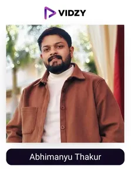

Technology is constantly changing and adapting around the world. From smart homes and AI tools to life-saving medical tech and eco-friendly innovations, new advancements and innovations are emerging daily, making our lives simpler, more productive, and better connected.
India, in particular, has seen tremendous growth in the technology sector. With advancements in mobile connectivity and digital payment, AI, IoT, and space technology, the country’s tech industry is expected to grow by 5.1% in 2025, reaching a total value of $300 billion.
It is home to many talented digital tech geniuses, who contribute to the industry's growth by educating and bridging the tech knowledge gap for millions of people in India. With their fun, engaging, and easy-to-understand content, Indian tech UGC creators share their valuable knowledge on various tech-related topics, helping the audience make correct choices in the tech world.
With their talent and creativity, tech UGC creators break down the complexities of tech topics to simple, digestible level content and have established themselves as trusted sources of information. Their authentic content, deep engagement, and the power to influence the buying decisions of the audience with word-of-mouth marketing make them invaluable partners for brands aiming to connect with tech-savvy consumers. Brands can enhance their awareness, build trust and credibility, and ultimately boost their ROI.
For that matter, our leading UGC agency in India, after thorough research and review, has curated a list of the top technology UGC creators in India, based on their content quality, engagement, and uniqueness in connecting with their audiences.
Moving ahead with the blog, we will learn who the Indian tech UGC creators are and how they can help brands achieve their desired results.
Who are the Tech UGC creators?
Technology UGC creators are individuals who share tech-related knowledge as high-quality content on social media. Their content comprises updated information on the latest gadgets, apps, tips and tricks, scams to avoid, and various other topics covering the broad tech industry. It is shared as product reviews, unboxing, tips on using gadgets, funny videos, challenges, information tutorials, guides, etc.
Let’s explore the list!
Top 10 Tech UGC creators in India
Contents
-
1. Sanidhya Tulsinandan
Channel: Sanidhya Tulsinandan
Followers: 909KEngagement Rate: 1.63%About The Influencers-
Sanidhya Tulsinandan is a popular tech content creator. He shares various ways of using AI and technology to solve everyday problems. His content explains useful tech tools, tips, and tricks to utilise them in a simple and fun way. He helps people prepare for job interviews and shares easy AI prompts to increase productivity.
His personal learnings and life hacks related to tech help people grow in their careers and daily lives. For those who love learning about tech, his page is full of helpful ideas and deep, innovative information.
-
2. Nitin Raj
Channel: Nitin Raj
Followers: 880KEngagement Rate: 8.81%About The Influencers-
Nitin Raj is a popular tech content creator from Kerala. He is known as @mrperfecttech on Instagram. He is also a proud TEDx speaker. He shares his content as easy-to-understand videos, which are mostly focused on smartphones, gadgets. His content delivery is primarily in Malayalam.
His content comprises unboxings, reviews, and helpful advice for his followers to help choose the right devices.
-
3. Mohit Verma
Channel: Mohit Verma
Followers: 1MEngagement Rate: 2.98%About The Influencers-
Mohit Verma is a famous tech UGC creator from India. He shares his knowledge on various tech products as tips, tutorials, reviews, and more. He simplifies technology for his audience, making it easy to understand and apply. He also shares various scam-related reels to make his followers aware of them.
Mohit's background as an engineer turned content creator adds depth to his insights, and his approachable style resonates with a wide audience. He had collaborated with many well-known tech brands like OnePlus and GoNoise.
-

4. Abhimanyu Thakur
Channel: Abhimanyu Thakur
Followers: 812KEngagement Rate: 6.11%About The Influencers-
Abhimanyu Thakur is a well-known tech creator from Moradabad, India. He is known as @technomanyu on Instagram. He shares his content as short informative videos to help his followers simply understand technology. His honest reviews of the latest smartphones and gadgets, clever tech tips and money-saving hacks are easy to follow and super useful for his audience.
He talks about how to reduce electricity bills using smart tools, the best apps to use, and even how to avoid online scams. His friendly style and real-life solutions have made him a favourite among people who want to learn about tech.
-
5. Mani Sandhu
Channel: Mani Sandhu
Followers: 1MEngagement Rate: 1.60%About The Influencers-
Mani Sandhu is one of the best tech content creators in India. He is known as Mr. Tech Inside on Instagram. He shares information on the latest tech gadgets in the market, unboxing videos, and detailed reviews on his collaboration packages. He also shares about ongoing tech scams, helping his followers to know about them.
Mani connects well with his audience, understands their needs, and shares info regarding the best deals to buy gadgets on a budget. He teaches them about personal data breaches, dangerous extensions, or apps they might be using, making him one of the reliable sources for tech-related queries.
-
6. Deepanshu Bhaskar
Channel: Deepanshu Bhaskar
Followers: 975KEngagement Rate: 1.11%About The Influencers-
Deepanshu Bhaskar is a leading tech content creator from India. He simplifies technology, AI tools, and digital tips for his audience. His short and informative videos cover topics like AI-powered productivity hacks, app tutorials, and practical tech advice, making complex concepts easy to understand.
His reel on ‘sharing easy and best ways to edit pictures’ on Instagram has gathered millions of likes. Brands seeking authentic engagement often collaborate with him to reach their tech-savvy audiences.
-
7. Gopal Raghav
Channel: Gopal Raghav
Followers: 979KEngagement Rate: 1.85%About The Influencers-
Gopal Raghav is a popular Indian tech content creator. He shares practical tips, app recommendations, and AI hacks. His content mostly includes tutorials on turning paid apps into free ones and exploring powerful AI tools. Gopal's relatable and entertaining style has made him a favourite among viewers looking for quick and useful tech insights.
His valuable content helps consumers to make genuine and better buying decisions.
-
8. Sameer Mohammad
Channel: Sameer Mohammad
Followers: 786KEngagement Rate: 1.76%About The Influencers-
Sameer Mohammad is a tech UGC creator, known as @mr.facttech on Instagram. His goal is to simplify tech for the audience. He shares quick and helpful videos about tech hacks, AI tools, app reviews, and smart tips and tricks. He focuses on making his followers 1% smarter every day.
Whether discovering a new app, learning an AI shortcut, or making better use of the smartphone, Sameer breaks it down in a fun and simple way anyone can understand.
-
9. Vaibhav Dhone
Channel: Vaibhav Dhone
Followers: 871KEngagement Rate: 2.65%About The Influencers-
Vaibhav Dhone is popularly known through his tech Instagram handle pen name, “Techovaibhav”. He creates content with various smartphone reviews, Android settings, app recommendations, and practical tech tips. He has done various paid collaborations with brands like Vivo, Samsung, Motorola, Jio, etc.
He also produces many comparison videos for his followers, with in-depth analysis of tech products.
-
10. Anuj Kumar
Channel: Anuj Kumar
Followers: 773KEngagement Rate: 2.61%About The Influencers-
Anuj is a well-known tech content creator, known as @techy.teddy on Instagram. His content is beginner-friendly and detailed. He shares information around AI, tech, and smart tips. He also shares deals and discounts from various e-commerce platforms, helping his audience find the best offers.
Anuj has partnered with top brands like Oppo India, Amazon, and Flipkart, sharing cool gadgets and the best online deals.
Conclusion:
As we conclude our blog, we have established that tech UGC creators in India play a considerable role in uplifting the Indian technology industry. With their informative, engaging, and easy-to-understand content, they have built a community of tech enthusiasts in the region who now put their trust in these creators.
Their content helps people connect, learn, and make smart choices with their gadgets and digital tools. That’s why tech brands in India partner with these creators to reach the right audience, build trust, and boost sales through content that feels real and reliable.
We, as the top UGC agency in India, help brands collaborate with the right tech creators to deliver authentic, high-performing content, delivering exceptional results.
Want to boost your brand with trusted tech voices? Let’s connect and take your brand to the next level!